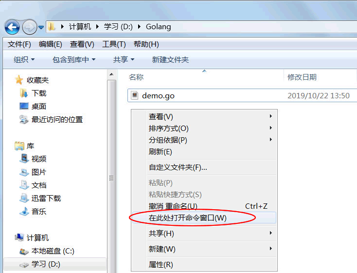
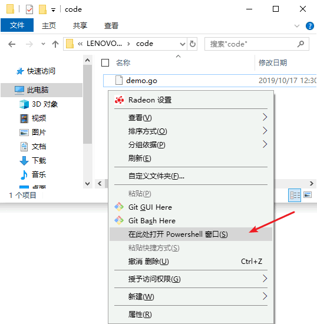
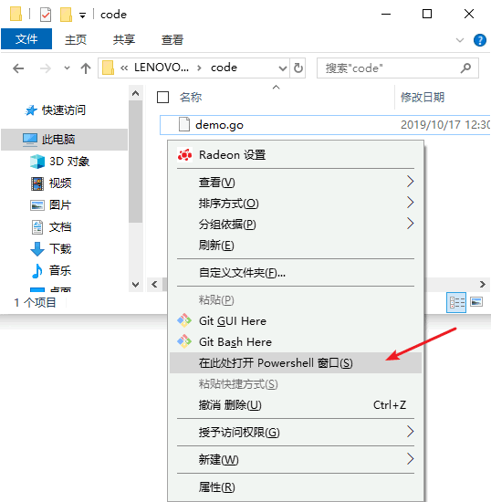
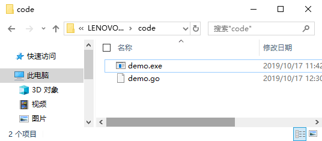

Go语言程序的编译和运行
Go语言是编译型的静态语言（和C语言一样），所以在运行Go语言程序之前，先要将其编译成二进制的可执行文件。
可以通过Go语言提供的
下面就来演示一下，如何运行我们上一节中编写的Go语言程序。
因为之前我们已经配置好了环境变量，所以可以直接使用 Windows 自带的命令行工具（也叫 CMD 窗口或者命令提示符）来编译Go语言程序。微软后来对命令行工具进行了一次升级，并更名为 Powershell，power 是更加强大的意思。
打开命令行工具的方式多种多样，下面列出了比较常用的两种：
使用 go build 命令进行编译时，不同参数的执行结果也是不同的。
使用
第 1 行
第 2 行中的
第 3 行则是 demo.exe 程序的运行结果。
使用
除了本节中所讲的，
可以通过Go语言提供的
go build或者go run命令对Go语言程序进行编译：
-
go build命令可以将Go语言程序代码编译成二进制的可执行文件，但是需要我们手动运行该二进制文件； -
go run命令则更加方便，它会在编译后直接运行Go语言程序，编译过程中会产生一个临时文件，但不会生成可执行文件，这个特点很适合用来调试程序。
下面就来演示一下，如何运行我们上一节中编写的Go语言程序。
因为之前我们已经配置好了环境变量，所以可以直接使用 Windows 自带的命令行工具（也叫 CMD 窗口或者命令提示符）来编译Go语言程序。微软后来对命令行工具进行了一次升级，并更名为 Powershell，power 是更加强大的意思。
打开命令行工具的方式多种多样，下面列出了比较常用的两种：
- 可以在开始菜单中打开命令行工具，然后 cd 到 Go 源文件所在的目录。
- 也可以在 Go 源文件所在目录的空白处按住 Shift 键并单击鼠标右键，然后在弹出菜单中选择“在此处打开命令行窗口”或者“在此处打开 Powershell 窗口”，这样会自动 cd 到 Go 源文件所在的目录，如下图所示。这种方式更加方便，推荐大家使用。
提示：cd 是命令行工具的一个命令，用来改变当前所在的目录，是 change directory 的缩写。

Win7 下选择“在此处打开命令窗口”

Win10 下选择“在此处打开 Powershell 窗口”
Win7 下选择“在此处打开命令窗口”

Win10 下选择“在此处打开 Powershell 窗口”
go build 命令
go build 命令用来启动编译，它可以将Go语言程序与相关依赖编译成一个可执行文件，其语法格式如下。
go build fileName
其中 fileName 为所需要的参数，可以是一个或者多个 Go 源文件名（当有多个参数时需要使用空格将两个相邻的参数隔开），也可以省略不写。使用 go build 命令进行编译时，不同参数的执行结果也是不同的。
1) 当参数不为空时
如果 fileName 为同一 main 包下的所有源文件名（可能有一个或者多个），编译器将生成一个与第一个 fileName 同名的可执行文件（如执行 go build abc.go def.go ... 会生成一个 abc.exe 文件）；如果 fileName 为非 main 包下的源文件名，编译器将只对该包进行语法检查，不生成可执行文件。2) 当参数为空时
如果当前目录下存在 main 包，则会生成一个与当前目录名同名的“目录名.exe”可执行文件（如在 hello 目录中执行 go build 命令时，会生成 hello.exe 文件）；如果不存在 main 包，则只对当前目录下的程序源码进行语法检查，不会生成可执行文件。使用
go build 命令对我们上一节编写的程序进行编译，运行结果如下所示：
D:\code> go build .\demo.go
D:\code> .\demo.exe
Hello World!
D:\code>对应的是当前目录，也就是 D 盘下的 code 文件夹，它是命令行工具自动添加的，不属于编译命令的一部分。第 1 行
go build命令后面的参数中，.\表示当前目录。在Windows 系统中，当前目录使用.\表示；在类 Unix 系统（例如 Linux、MacOS 等）中，当前目录使用./表示。
注意，这里的go build 命令中 .\可以省略不写，不会影响编译。
go build 命令只有在执行出错的情况下才会有返回信息，执行成功的话是没有返回信息的，但是会在当前目录生成一个与 main 包文件同名的 .exe 可执行文件，如下图所示。

第 2 行中的
.\demo.exe表示执行当前目录下的 demo.exe 程序。第 3 行则是 demo.exe 程序的运行结果。
go run 命令
除了使用go build命令外，Go语言还为我们提供了go run命令，go run命令将编译和执行指令合二为一，会在编译之后立即执行Go语言程序，但是不会生成可执行文件。go run 命令的语法格式如下：
go run fileName
其中 fileName 为所需要的参数，参数必须是同一 main 包下的所有源文件名，并且不能为空。使用
go run 命令对我们上一节编写的程序进行编译，运行结果如下所示：
D:\code> go run demo.go
Hello World!
go run 命令执行后，直接在第 2 行输出了程序的运行结果。除了本节中所讲的，
go build 命令和 go run 命令还有很多其他的编译方法，我们将在后面为大家详细介绍。关注公众号「站长严长生」，在手机上阅读所有教程，随时随地都能学习。内含一款搜索神器，免费下载全网书籍和视频。

微信扫码关注公众号